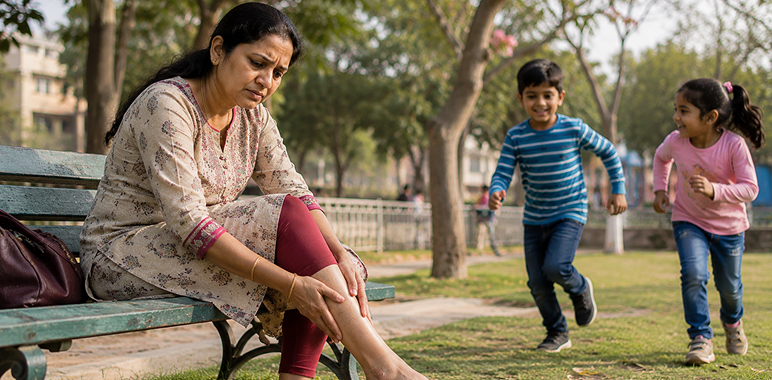
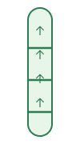
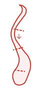

<section class="info__section">
  <div class="container">
    <div class="info__section-wrapper">
      <div class="info__breadcrumbs mb-16">
        <span>स्वास्थ्य</span>
        <span class="alt">›</span>
        <span>महिलाओं की सेहत</span>
        <span class="alt">›</span>
        <span class="alt">वैरिकाज - वेंस</span>
      </div>
      <div class="info__tags mb-16">
        <div class="info__tag info__tag-1">महिलाओं की सेहत</div>
        <div class="info__tag info__tag-2">विशेष रिपोर्ट</div>
      </div>
      <h1 class="info__title mb-16">
        क्या 14 दिनों में पैरों में सूजन वाली नसों से होने वाली परेशानी को कम करना संभव है? भारत में महिलाएं नॉर्मवेइन
        के बारे में क्यों तेजी से बात कर रही हैं?
      </h1>
      <h2 class="header__subtitle mb-20">
        पैरों में भारीपन, जलन, सूजन और उभरी हुई नीली नसें न केवल एक सौंदर्य संबंधी समस्या है. इस स्थिति के कारण चलना,
        काम करना, पारिवारिक गतिविधियों में शामिल होना और आत्मविश्वास महसूस करना कठिन हो सकता है।
      </h2>
      <div class="info__banner mb-24">
        <div class="banner__icon">HB</div>
        <div class="banner__body">
          <h3 class="banner__title">Health Bharat Today Editorial Team</h3>
          <p class="banner__text">वेलनेस सलाहकार द्वारा समीक्षित · पढ़ने का समय: 7 मिनट · आज अपडेट किया गया</p>
        </div>
        <div class="banner__links">
          <a href="#order" class="banner__link"> 📤 Share </a>
          <a href="#order" class="banner__link"> 🔖 Save </a>
        </div>
      </div>
      <div class="info__img-wrapper mb-24">
        
        <p class="info__img-text">
            सचित्र फोटो. व्यक्तिगत लक्षण अलग-अलग हो सकते हैं
        </p>
      </div>
      <div class="blockquote mb-36">
        <p class="blockquote__text">
            डॉक्टरों के अनुसार, भारत में 30 से 55 वर्ष की आयु की <span>40% से अधिक महिलाओं को पैरों में भारीपन, नसें दिखाई देने और सूजन का अनुभव होता है - विशेष रूप से गर्भावस्था के बाद और काम पर लंबे समय तक खड़े रहने के बाद. लेकिन बहुत कम लोग जानते हैं कि अपने पैरों की ठीक से देखभाल कैसे करें और समय पर इस पर ध्यान कैसे दें।</span>
        </p>
      </div>
      <p class="tag mb-12">
        <span>पाठक की कहानी</span>
      </p>
      <div class="info__title-small mb-20">
        "मैं बच्चों के साथ 10 मिनट भी नहीं चल पाती" - पुणे की अंजलि की कहानी
      </div>
      <p class="info__text mb-16">
        पुणे की 39 वर्षीय मां अंजलि हमेशा सक्रिय जीवन जीती हैं. सुबह वह बच्चों को स्कूल के लिए तैयार करती, घर की देखभाल करती, काम करती और शाम को वह पारिवारिक मामलों में लौट आती।. उसका दिन जल्दी शुरू होता था और लगभग कभी भी समय पर ख़त्म नहीं होता था.
      </p>
       <p class="info__text mb-20">
        लेकिन दूसरी बार गर्भधारण करने के बाद उन्हें अपने पैरों में अजीब सा भारीपन नजर आने लगा. पहले तो अंजलि को लगा कि यह सिर्फ थकान है. फिर उसके पैरों पर नीली नसें उभर आईं, शाम को सूजन तेज हो गई और रात में वह अक्सर जलन के कारण जाग जाती थी
      </p>
      <div class="blockquote-2 mb-20">
        <h3 class="blockquote__title mb-10">
            "मैं सचमुच डर गई जब मेरी बेटी ने पूछा, 'माँ, आप अब हमारे साथ पार्क में क्यों नहीं खेलतीं?'"
        </h3>
        <p class="blockquote__text-small">
            - अंजलि, 39, पुण
        </p>
      </div>
      <p class="info__text mb-24">
        उस पल, अंजलि को एहसास हुआ: उसके पैरों की समस्या न केवल उसकी उपस्थिति को प्रभावित करती है. यह आपकी ऊर्जा, आत्मविश्वास और आपके परिवार के लिए मौजूद रहने की क्षमता को छीन लेता है।
      </p>
      <div class="info__img-wrapper mb-80">
        
        <p class="info__img-text">
            सचित्र फोटो. अंजलि फिर से अपने बच्चों के लिए एक सक्रिय माँ बनना चाहती थी।
        </p>
      </div>
      <p class="tag mb-12">
        <span>जानना ज़रूरी है</span>
      </p>
      <h3 class="info__title-small mb-16">
        उभरी हुई नसें सिर्फ एक कॉस्मेटिक दोष नहीं हैं
      </h3>
      <p class="info__text mb-24">
        कई महिलाएं शुरू में अपने पैरों में सूजन, भारीपन और संवहनी नेटवर्क को नजरअंदाज कर देती हैं. ऐसा लगता है जैसे यह सिर्फ एक लंबे दिन के बाद की थकान है।. लेकिन समय के साथ, असुविधा बढ़ सकती है और सामान्य जीवन में बाधा उत्पन्न हो सकती है।
      </p>
      <div class="info__items mb-32">
        <div class="info__item">
            <span class="info__item-icon"></span>
            <span>भारी पैर</span>
        </div>
        <div class="info__item">
            <span class="info__item-icon"></span>
            <span>शाम को सूजन</span>
        </div>
        <div class="info__item">
            <span class="info__item-icon"></span>
            <span>जलन या जकड़न महसूस होना</span>
        </div>
        <div class="info__item">
            <span class="info__item-icon"></span>
            <span>नीली या बैंगनी रंग की उभरी हुई नसें</span>
        </div>
        <div class="info__item">
            <span class="info__item-icon"></span>
            <span>लंबे समय तक खड़े रहने के बाद दर्द होना</span>
        </div>
        <div class="info__item">
            <span class="info__item-icon"></span>
            <span>स्कर्ट, साड़ी या खुले कपड़े पहनने पर बेचैनी</span>
        </div>
      </div>
      <div class="info__block mb-12">
        <div class="info__block-item info__block-1">
            
            <div class="info__block-tag">
                सामान्य नस
            </div>
            <p class="info__block-text">
                वाल्व काम करते हैं, रक्त समान रूप से ऊपर की ओर बहता है
            </p>
        </div>
        <p class="info__block-divider">
            →
        </p>
        <div class="info__block-item info__block-2">
            
            <div class="info__block-tag">
                वैरिकोज़ नस
            </div>
            <p class="info__block-text">
                वाल्व कमजोर हो जाते हैं, दीवारें फैल जाती हैं, रक्त प्रवाह बाधित हो जाता है
            </p>
        </div>
      </div>
      <p class="info__text-bottom">
        जब पैर की नसों में रक्त संचार कम हो जाता है तो वैरिकोज नसें अधिक ध्यान देने योग्य हो सकती हैं।
      </p>
    </div>
  </div>
</section>
